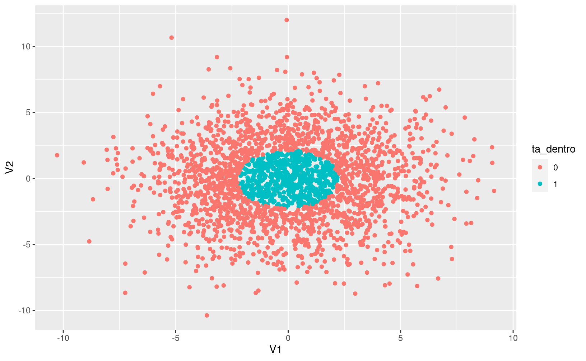
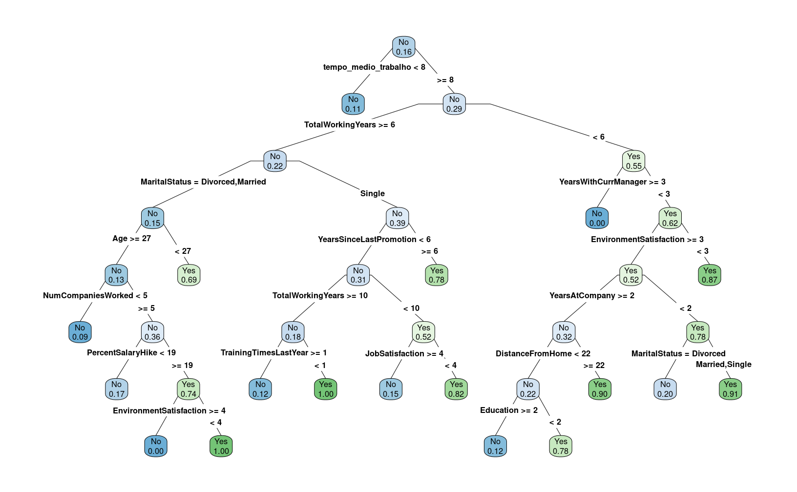
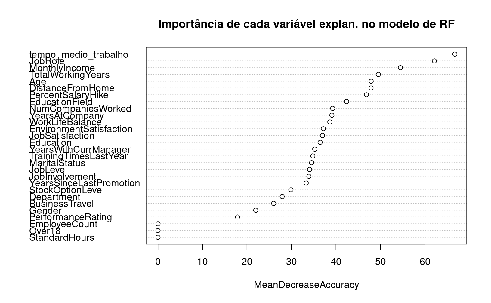

15 Modelos
O objetivo deste capítulo é dar uma visão geral sobre a estrutura de modelos no R. Isto é, quais são as suas funções básicas, como especificar um modelo, recuperar resíduos, realizar predições etc. Esse processo é parte fundamental de análises mais aprofundadas. Os modelos podem ser usados, de maneira não exclusiva, para exploração de dados, geração de predições e análises de causalidade. Por exemplo:
- Descritivo: relação entre salários, idade, experiência e anos de estudo;
- Predição: modelo para identificar risco de fraude em uma transação bancária, classificação de imagens, previsão do PIB para o ano que vem;
- Causalidade: aumento de imposto sobre cigarro e redução no consumo.
15.1 Modelo Linear
Vamos introduzir a estrutura de modelos no R a partir de modelos lineares. Trataremos do modelo linear para regressão e do modelo de regressão logística para classificação. O modelo de regressão é utilizado quando a variável de interesse (dependente ou target) é uma variável quantitativa contínua. Por exemplo, salários, preços, notas em um exame etc. Por outro lado, modelos de classificação são utilizados quando a variável de interesse é categórica. Por exemplo: uma pessoa tem ou não tem a doença X, o cliente pagou ou não o cartão de crédito, o usuário X é um robô ou uma pessoa etc.
15.1.1 Regressão
Vamos começar com o modelo linear de regressão:
\[y_i = \beta_0 + \beta_1 x_{1i} + \beta_2 x_{2i} + ... + \beta_k x_{ki} + \epsilon_i, ~~ i = 1, ..., N,\] onde \(y\) é a variável dependente, \(x_{k}\) é a k-ésima variável explicativa, \(\beta_k\) é o parâmetro estimado para k-ésima variável e \(\epsilon\) é o termo de erro.
A função lm() estima esse modelo pelo método denominado de mínimos quadrados ordinários (MQO). Antes de exemplificarmos o uso da função, vamos falar sobre a representação simbólica do modelo, ou seja, como especificar o modelo no R. Em geral, o modelo terá argumentos x e y, em que o usuário passa os dados nesses argumentos ou terá a estrutura de fórmula. Por ser o método menos usado no modelo linear, detalharemos a estrutura de fórmula. Na função lm(), é obrigatório passar-se um objeto da classe fórmula, ou algum objeto que possa ser convertido para uma fórmula. Por exemplo: para o modelo linear com duas variáveis (\(y\) e \(x\)) e uma constante, a fórmula correspondente é:
## [1] "character"## [1] "formula"Para mostrarmos as possibilidades de uso da fórmula de especificação do modelo, utilizaremos a base mtcars. Esta base traz o consumo de gasolina (mpg) e algumas outras características do veículo. Detalharemos cada variável explicativa conforme elas são usadas. No entanto, você pode olhar o help dessa base: ?mtcars. Para iniciarmos, utilizaremos a variável mpg (miles per galon) e a variável hp (Gross horsepower).
##
## Call:
## lm(formula = mpg ~ hp, data = mtcars)
##
## Coefficients:
## (Intercept) hp
## 30.09886 -0.06823Note que não houve especificação de uma constante. Automaticamente, o R inclui a constante. Você pode inclui-la explicitamente ou retirá-la:
Já temos uma pista de como incluir mais variáveis: basta “adicioná-las” com o símbolo +. Isto é, vamos incluir a variável am - Transmission (0 = automatic, 1 = manual) - no modelo:
Se quiséssemos incluir todas as variáveis explicativas:
Interações:
Transformações:
##
## Call:
## lm(formula = log(mpg) ~ log(hp) + am, data = mtcars)
##
## Coefficients:
## (Intercept) log(hp) am
## 5.1196 -0.4591 0.1954No entanto, algumas transformações podem se confundir com símbolos quem são usados na fórmula. No exemplo abaixo, abstraia os dados e foque no efeito resultante da fórmula:
##
## Call:
## lm(formula = mpg ~ (am + hp)^2 + hp^2, data = mtcars)
##
## Coefficients:
## (Intercept) am hp am:hp
## 26.6248479 5.2176534 -0.0591370 0.0004029(am + hp)^2, em termos simbólicos, retorna am + hp + am*hp e hp^2 retorna hp. No caso em que um símbolo não pode ser usado diretamente, este deve ser usado dentro da função I():
##
## Call:
## lm(formula = mpg ~ hp + I(hp^2), data = mtcars)
##
## Coefficients:
## (Intercept) hp I(hp^2)
## 40.4091172 -0.2133083 0.0004208Variáveis categóricas são convertidas automaticamente para dummies. Por exemplo, vamos adicionar uma variável fictícia chamada cat, que receberá valores a, b e c ao data.frame mtcars:
library(tidyverse)
mtcars <- mutate(mtcars,
cat = sample(c("a", "b", "c"),
size = nrow(mtcars), replace = TRUE))
lm(mpg ~ hp + cat, data = mtcars)##
## Call:
## lm(formula = mpg ~ hp + cat, data = mtcars)
##
## Coefficients:
## (Intercept) hp catb catc
## 30.1724 -0.0687 0.4361 -0.3180Falta agora discutir os principais argumentos da função lm():
lm(formula, data, subset, weights, na.action,
method = "qr", model = TRUE, x = FALSE, y = FALSE, qr = TRUE,
singular.ok = TRUE, contrasts = NULL, offset, ...)O argumento formula já foi discutido anteriormente. É neste argumento que o modelo é especificado. O argumento data recebe (opcionalmente) um data.frame com os dados. O parâmetro data é opcional, porque você pode passar diretamente os vetores de dados. Por exemplo:
##
## Call:
## lm(formula = log(mtcars$mpg) ~ log(mtcars$hp))
##
## Coefficients:
## (Intercept) log(mtcars$hp)
## 5.5454 -0.5301Continuando, há possibilidade de estimar-se o modelo para um subconjunto dos dados, sendo necessário informar um vetor que selecione as observações que entrarão na estimação, no argumento subset. No exemplo que estamos utilizando, suponha que você queira estimar o modelo apenas para os carros automáticos:
##
## Call:
## lm(formula = mpg ~ hp, data = mtcars, subset = (am == 0))
##
## Coefficients:
## (Intercept) hp
## 26.62485 -0.05914##
## Call:
## lm(formula = mpg ~ hp, data = mtcars, subset = (am == 1))
##
## Coefficients:
## (Intercept) hp
## 31.84250 -0.05873Há também a possibilidade de utilizar-se um vetor de pesos no argumento weight para a estimação de mínimos quadrados ordinários.
Para ver-se um sumário dos resultados da estimação, utiliza-se a função summary():
##
## Call:
## lm(formula = mpg ~ hp, data = mtcars)
##
## Residuals:
## Min 1Q Median 3Q Max
## -5.7121 -2.1122 -0.8854 1.5819 8.2360
##
## Coefficients:
## Estimate Std. Error t value Pr(>|t|)
## (Intercept) 30.09886 1.63392 18.421 < 2e-16 ***
## hp -0.06823 0.01012 -6.742 1.79e-07 ***
## ---
## Signif. codes: 0 '***' 0.001 '**' 0.01 '*' 0.05 '.' 0.1 ' ' 1
##
## Residual standard error: 3.863 on 30 degrees of freedom
## Multiple R-squared: 0.6024, Adjusted R-squared: 0.5892
## F-statistic: 45.46 on 1 and 30 DF, p-value: 1.788e-0715.1.1.1 Acessando os resultados
Além do resumo, é possível acessar uma série de objetos gerados pela função lm(), como coeficientes, resíduos, valores preditos (dentro do conjunto de estimação) etc. Primeiro, vamos listar esses elementos:
## [1] TRUE## [1] "assign" "call" "coefficients" "df.residual" "effects" "fitted.values" "model"
## [8] "qr" "rank" "residuals" "terms" "xlevels"Como se trata de uma lista, podemos acessar os objetos usando o $.
## (Intercept) hp
## 30.09886054 -0.06822828## 1 2 3 4 5 6 7 8 9 10
## -1.5937500 -1.5937500 -0.9536307 -1.1937500 0.5410881 -4.8348913 0.9170676 -1.4687073 -0.8171741 -2.5067823Também existem funções para se acessar esses resultados:
## (Intercept) hp
## 30.09886054 -0.06822828## 1 2 3 4 5
## -1.5937500 -1.5937500 -0.9536307 -1.1937500 0.541088115.1.1.2 Predições
No R, para realizar-se predições, utiliza-se a função predict(), que é uma função genérica. Isso significa que os seus argumentos e os valores retornados dependem da classe do objeto que estamos passando. No caso de um objeto da classe lm, é suficiente passar o próprio objeto.
Abaixo está um exemplo do seu uso:
set.seed(13034) # para replicação
# 70% dos dados
idx <- sample(nrow(mtcars), size = 0.7*nrow(mtcars), replace = FALSE)
train <- mtcars[idx, ]
test <- mtcars[-idx, ]
# 2 Modelos
fit1 <- lm(mpg ~ hp, data = train)
fit2 <- lm(mpg ~ hp + am + disp, data = train)
# Predições
pred1 <- predict(fit1, newdata = test[,-1])
pred2 <- predict(fit2, newdata = test[,-1])
# Comparando Root Mean Square Errors
library(ModelMetrics)
rmse(pred1, test[, "mpg"])## [1] 4.958482## [1] 3.56899315.1.2 Classificação
Como já mencionado, quando a variável de interesse é categórica, utilizamos modelos de classificação. O modelo linear mais conhecido é o chamado Regressão Logística.
Suponha que queremos prever se uma pessoa irá ou não pagar a fatura do cartão de crédito. Definimos como \(p\) a probabilidade da pessoa não pagar e como razão de chance (_odds ratio) o valor \(\frac{p}{1-p}\). A função logit, por sua vez, é definida como:
\[ logit(p) = log\left(\frac{p}{1-p}\right)\]
Sendo \(y\) a nossa variável dependente, vamos definir que ela recebe valor 1 se o cliente não paga e 0 caso contrário. Logo, o modelo linear para o logit é definido como:
\[ logit(p(y = 1|X)) = \beta_0 + \beta_1 x_{1i} + \beta_2 x_{2i} + ... + \beta_k x_{ki}\]
Os parâmetros \(\beta's\) são obtidos a partir de métodos de otimização em que o objetivo minimizar é uma função de perda determinada. Note que a probabilidade de ocorrência do evento pode ser calculada como:
\[ p(y = 1|X) = \frac{e^{\beta_0 + \beta_1 x_{1i} + \beta_2 x_{2i} + ... + \beta_k x_{ki}}}{1 + e^{\beta_0 + \beta_1 x_{1i} + \beta_2 x_{2i} + ... + \beta_k x_{ki}}}\]
Um detalhe importante sobre a regressão logística é que este modelo se enquadra na classe de modelos lineares generalizados (generalized linear models - glm). Logo, este modelo pode ser estimado a partir da função glm(), escolhendo a família binomial no argumento family.
O exemplo a seguir vem do livro An Introduction to Statistical Learning with Application in R. Utilizaremos o pacote ISLR e o conjunto de dados Smarket (?Smarket). Essa base traz informações sobre as variações do índice S&P 500 entre 2001 e 2005. Este índice é composto por 500 ativos negociados na NYSE ou Nasdaq.
## Year Lag1 Lag2 Lag3 Lag4 Lag5 Volume Today Direction
## 1 2001 0.381 -0.192 -2.624 -1.055 5.010 1.1913 0.959 Up
## 2 2001 0.959 0.381 -0.192 -2.624 -1.055 1.2965 1.032 Up
## 3 2001 1.032 0.959 0.381 -0.192 -2.624 1.4112 -0.623 Down
## 4 2001 -0.623 1.032 0.959 0.381 -0.192 1.2760 0.614 Up
## 5 2001 0.614 -0.623 1.032 0.959 0.381 1.2057 0.213 Up
## 6 2001 0.213 0.614 -0.623 1.032 0.959 1.3491 1.392 UpA base consiste em nove variáveis. A variável de interesse é Direction e outras cinco variáveis serão usadas como variáveis explicativas ou preditores. Inicialmente, separaremos nossos dados em treino e teste. Como trata-se de um problema de série temporal, utilizaremos a variável Year para separar os dados.
train <- Smarket %>%
filter(Year <= 2004) %>%
select(-Year)
test <- Smarket %>%
filter(Year == 2005) %>%
select(-Year)Agora vamos estimar o modelo:
##
## Call:
## glm(formula = Direction ~ . - Today, family = binomial(), data = train)
##
## Deviance Residuals:
## Min 1Q Median 3Q Max
## -1.302 -1.190 1.079 1.160 1.350
##
## Coefficients:
## Estimate Std. Error z value Pr(>|z|)
## (Intercept) 0.191213 0.333690 0.573 0.567
## Lag1 -0.054178 0.051785 -1.046 0.295
## Lag2 -0.045805 0.051797 -0.884 0.377
## Lag3 0.007200 0.051644 0.139 0.889
## Lag4 0.006441 0.051706 0.125 0.901
## Lag5 -0.004223 0.051138 -0.083 0.934
## Volume -0.116257 0.239618 -0.485 0.628
##
## (Dispersion parameter for binomial family taken to be 1)
##
## Null deviance: 1383.3 on 997 degrees of freedom
## Residual deviance: 1381.1 on 991 degrees of freedom
## AIC: 1395.1
##
## Number of Fisher Scoring iterations: 3As predições são realizadas com a função predict(), mas com o detalhe de que temos que escolher o tipo de predição. O default, link, passará o logit. Isto é, o valor da predição linear. Já response estimará a probabilidade da observação do evento de interesse. Por fim, terms retorna uma matriz com a predição linear para cada variável explicativa. O nosso interesse é na probabilidade do mercado ter subido, logo, usaremos o tipo response e transformaremos a probabilidade em Up e Down.
pred <- predict(fit, test, type = 'response')
pred <- ifelse(pred > 0.5, "Up", "Down")
pred <- factor(pred, levels = c("Down", "Up"))Abaixo avaliamos o erro de classificação, que é de, aproximadamente, 52%. Ou seja, pior do que um chute aleatório.
## [1] 0.5198413Os autores, então, sugerem estimar-se o modelo com apenas duas variáveis.
fit <- glm(Direction ~ Lag1 + Lag2, data = train, family = binomial())
pred <- predict(fit, test, type = 'response')
pred <- ifelse(pred > 0.5, "Up", "Down")
pred <- factor(pred, levels = c("Down", "Up"))
# Taxa de erro
ce(test$Direction, pred)## [1] 0.4404762Nesse caso, o modelo acertaria 56% das vezes.
15.1.3 Classificação com modelos baseados em árvores
Uma das limitações da regressão logística é que esse método não vai funcionar bem quando não for possível separar as classes linearmente, como no exemplo abaixo:
#### atencao: nao precisam se preocupar em reproduzir o codigo abaixo
# criar matriz de dados aleatorios
mat <- matrix(rnorm(5000, mean = 0, sd = 3), ncol = 2) %>% as.data.frame()
# criar elipse que circunda 25% dos pontos
el <- car::dataEllipse(mat[, 1],
mat[, 2],
levels = 0.25,
draw = FALSE)
# determinar se um ponto da matriz está dentro da elipse
mat$ta_dentro <- sp::point.in.polygon(mat[,1], mat[,2], el[,1], el[,2])
mat$ta_dentro <- as.factor(mat$ta_dentro)
# construir grafico de pontos, colorindo a elipse
ggplot(mat, aes(x = V1, y = V2, color = ta_dentro)) +
geom_point()
Algoritmos baseados em Decision Trees tentam achar maneiras de criar subsets ou subgrupos do universo dos dados, onde cada subgrupo pertence a um node. O objetivo do modelo é criar nodes onde haja uma distinção clara entre as classes previstas de forma que possa a cada node a probabilidade de um indivíduo pertencer a uma classe. O gráfico abaixo é um exemplo simples e didática de uma árvore de decisão:
](images/arvore.png)
Figura 15.1: Fonte: Machine Learning Mastery
Nesse modelo, que tenta prever o sexo de uma pessoa baseada na altura e no peso, o algoritmo de classificação funciona como uma série de regras SE-NÃO:
- Se a altura for maior que 180cm, o indivíduo é um homem;
- Se a altura é menor ou igual a 180cm e o peso é maior que 80kg, o indivíduo é homem;
- Caso contrário, o indivíduo é mulher.
No R, os modelos de Decision Trees são aplicados principalmente pelo pacote rpart. Este tutorial é bem explicativo.
15.1.3.1 Estudo de caso: coleta dos dados e análise exploratória
Como dataset de demonstração para a árvore de decisão, usaremos um bem interessante: Tentaremos entender o que leva um empregado a pedir ou não demissão de sua empresa. Entrem neste link, loguem no Kaggle e baixem o dataset para a mesma pasta de trabalho que estão usando no R.
O código abaixo mostra como importar e consolidar todos os datasets em um só dataframe:
Vejamos como ficou nosso conjunto de dados:
## Rows: 4,300
## Columns: 30
## $ Age <dbl> 51, 31, 32, 38, 32, 46, 28, 29, 31, 25, 45, 55, 47, 28, 37, 21, 37, 35, 38, 26, 50, 53, 29, …
## $ Attrition <fct> No, Yes, No, No, No, No, Yes, No, No, No, No, No, Yes, No, No, No, No, No, No, No, No, No, N…
## $ BusinessTravel <fct> Travel_Rarely, Travel_Frequently, Travel_Frequently, Non-Travel, Travel_Rarely, Travel_Rarel…
## $ Department <fct> Sales, Research & Development, Research & Development, Research & Development, Research & De…
## $ DistanceFromHome <dbl> 6, 10, 17, 2, 10, 8, 11, 18, 1, 7, 17, 14, 1, 1, 1, 3, 1, 7, 8, 1, 8, 11, 16, 1, 9, 5, 1, 2,…
## $ Education <dbl> 2, 1, 4, 5, 1, 3, 2, 3, 3, 4, 2, 4, 1, 3, 3, 2, 3, 4, 3, 4, 4, 4, 4, 4, 3, 1, 2, 3, 3, 3, 1,…
## $ EducationField <fct> Life Sciences, Life Sciences, Other, Life Sciences, Medical, Life Sciences, Medical, Life Sc…
## $ EmployeeCount <dbl> 1, 1, 1, 1, 1, 1, 1, 1, 1, 1, 1, 1, 1, 1, 1, 1, 1, 1, 1, 1, 1, 1, 1, 1, 1, 1, 1, 1, 1, 1, 1,…
## $ EmployeeID <dbl> 1, 2, 3, 4, 5, 6, 7, 8, 9, 10, 11, 13, 14, 15, 16, 17, 18, 19, 20, 21, 22, 23, 25, 26, 27, 2…
## $ Gender <fct> Female, Female, Male, Male, Male, Female, Male, Male, Male, Female, Male, Female, Male, Male…
## $ JobLevel <dbl> 1, 1, 4, 3, 1, 4, 2, 2, 3, 4, 2, 1, 1, 1, 2, 1, 2, 1, 1, 2, 1, 2, 1, 1, 1, 1, 2, 1, 3, 1, 2,…
## $ JobRole <fct> Healthcare Representative, Research Scientist, Sales Executive, Human Resources, Sales Execu…
## $ MaritalStatus <fct> Married, Single, Married, Married, Single, Married, Single, Married, Married, Divorced, Marr…
## $ MonthlyIncome <dbl> 131160, 41890, 193280, 83210, 23420, 40710, 58130, 31430, 20440, 134640, 79910, 55380, 57620…
## $ NumCompaniesWorked <dbl> 1, 0, 1, 3, 4, 3, 2, 2, 0, 1, 0, 0, 1, 1, 4, 1, 2, 7, 1, 1, 3, 3, 1, 3, 1, 1, 3, 9, 2, 1, 9,…
## $ Over18 <fct> Y, Y, Y, Y, Y, Y, Y, Y, Y, Y, Y, Y, Y, Y, Y, Y, Y, Y, Y, Y, Y, Y, Y, Y, Y, Y, Y, Y, Y, Y, Y,…
## $ PercentSalaryHike <dbl> 11, 23, 15, 11, 12, 13, 20, 22, 21, 13, 13, 17, 11, 14, 11, 12, 13, 16, 11, 18, 23, 11, 11, …
## $ StandardHours <dbl> 8, 8, 8, 8, 8, 8, 8, 8, 8, 8, 8, 8, 8, 8, 8, 8, 8, 8, 8, 8, 8, 8, 8, 8, 8, 8, 8, 8, 8, 8, 8,…
## $ StockOptionLevel <dbl> 0, 1, 3, 3, 2, 0, 1, 3, 0, 1, 2, 0, 2, 0, 0, 3, 1, 0, 1, 0, 0, 0, 1, 0, 0, 0, 1, 0, 0, 0, 0,…
## $ TotalWorkingYears <dbl> 1, 6, 5, 13, 9, 28, 5, 10, 10, 6, 21, 37, 10, 5, 7, 3, 15, 10, 8, 6, 28, 21, 10, 12, 5, 17, …
## $ TrainingTimesLastYear <dbl> 6, 3, 2, 5, 2, 5, 2, 2, 2, 2, 2, 2, 4, 2, 2, 3, 2, 5, 5, 3, 2, 2, 2, 2, 3, 2, 2, 3, 5, 6, 2,…
## $ YearsAtCompany <dbl> 1, 5, 5, 8, 6, 7, 0, 0, 9, 6, 20, 36, 10, 5, 5, 3, 5, 7, 8, 6, 10, 5, 10, 10, 5, 17, 1, 2, 3…
## $ YearsSinceLastPromotion <dbl> 0, 1, 0, 7, 0, 7, 0, 0, 7, 1, 4, 4, 9, 0, 0, 1, 0, 6, 7, 1, 1, 1, 0, 0, 3, 5, 0, 1, 0, 0, 1,…
## $ YearsWithCurrManager <dbl> 0, 4, 3, 5, 4, 7, 0, 0, 8, 5, 10, 13, 9, 4, 1, 0, 2, 2, 7, 4, 6, 3, 9, 8, 3, 7, 0, 2, 2, 2, …
## $ EnvironmentSatisfaction <dbl> 3, 3, 2, 4, 4, 3, 1, 1, 2, 2, 3, 4, 1, 4, 3, 4, 1, 2, 1, 3, 1, 3, 2, 2, 1, 4, 4, 4, 1, 4, 3,…
## $ JobSatisfaction <dbl> 4, 2, 2, 4, 1, 2, 3, 2, 4, 1, 4, 1, 2, 4, 4, 3, 4, 2, 1, 2, 2, 3, 4, 4, 1, 4, 3, 4, 2, 4, 1,…
## $ WorkLifeBalance <dbl> 2, 4, 1, 3, 3, 2, 1, 3, 3, 3, 3, 3, 2, 2, 4, 4, 3, 2, 3, 1, 2, 2, 2, 3, 3, 3, 1, 3, 3, 3, 3,…
## $ JobInvolvement <dbl> 3, 2, 3, 2, 3, 3, 3, 3, 3, 3, 2, 3, 2, 3, 3, 2, 3, 2, 3, 3, 2, 3, 3, 3, 3, 3, 2, 2, 2, 2, 3,…
## $ PerformanceRating <dbl> 3, 4, 3, 3, 3, 3, 4, 4, 4, 3, 3, 3, 3, 3, 3, 3, 3, 3, 3, 3, 4, 3, 3, 3, 4, 3, 3, 3, 3, 3, 3,…
## $ tempo_medio_trabalho <dbl> 7.373651, 7.718969, 7.013240, 7.193678, 8.006175, 10.796096, 6.923570, 6.725621, 7.236499, 7…Exercícios:
- Conheça melhor nossa variável Resposta. Qual o % da base que saiu da empresa (Attrition = Yes). Baseado nessa informação, qual o pior modelo aceitável?
- Quais são as 2 variáveis numéricas que mais influenciam a variável resposta EmployeeID? Façam gráficos para investigar essa relação.
- Façam o mesmo para duas variáveis categóricas.
15.1.3.2 Criação do modelo
Conforme já comentamos, uma etapa essencial de um projeto de modelagem é criar uma separação de conjuntos de treino e teste.
### separacao de conjuntos de treino e teste
# salvar em um objeto o tamanho vertical do dataframe
n = nrow(rh)
# sortear aleatoriamente 70% das linhas do dataframe para compor
# o conjunto de treino
ind_treino <- sample(1:n, size = n * 0.7)
# criar conjunto de treino
rh_treino <- rh[ind_treino, ]
# criar conjunto de teste a partir da exclusao das linhas do conjunto de treino
rh_teste <- rh[-ind_treino, ]A sintaxe para criar um modelo de Decision Tree no R é bem simples, sendo a mesma da Regressão. A única diferença é que a função usada é rpart:
# construcao do modelo
mod_arvore <- rpart(Attrition ~ . - EmployeeID, data = rh_treino)
# visualizar o modelo
rpart.plot::prp(mod_arvore, type = 4, extra = 6, fallen.leaves = FALSE, varlen = 0,
faclen = 0, box.palette = "auto")
A árvore ficou meio grande, não? Uma boa alternativa nesse caso é salvar o gráfico da árvore em um pdf no computador:
15.1.3.3 Avaliação do desempenho preditivo de um modelo de classificação:
Vamos avaliar a acurácia do modelo:
# criar vetor com previsoes
ycast <- predict(mod_arvore, newdata = rh_teste, type = "class")
yreal <- rh_teste$Attrition
caret::confusionMatrix(data = ycast,
reference = yreal,
positive = "Yes",
mode = "everything")## Confusion Matrix and Statistics
##
## Reference
## Prediction No Yes
## No 1055 139
## Yes 23 73
##
## Accuracy : 0.8744
## 95% CI : (0.8551, 0.892)
## No Information Rate : 0.8357
## P-Value [Acc > NIR] : 6.138e-05
##
## Kappa : 0.414
##
## Mcnemar's Test P-Value : < 2.2e-16
##
## Sensitivity : 0.34434
## Specificity : 0.97866
## Pos Pred Value : 0.76042
## Neg Pred Value : 0.88358
## Precision : 0.76042
## Recall : 0.34434
## F1 : 0.47403
## Prevalence : 0.16434
## Detection Rate : 0.05659
## Detection Prevalence : 0.07442
## Balanced Accuracy : 0.66150
##
## 'Positive' Class : Yes
## Alguns dos conceitos mostrados acima são:
- Sensitivity ou Recall: De todos os casos que saíram de fato, quantos foram previstas corretamente?
- Specificity: De todos os casos que não saíram, quantos foram previstos corretamente?
- Accuracy: De todos os casos, quantos foram previstos corretamente?
- Precision: De todos os casos previstos que não iriam sair, quantos de fato não saíram?
- No Information Rate: Também conhecido como Null Error Rate. Qual teria sido a acurácia de um modelo que previsse sempre o caso mais comum?
15.1.3.4 Random Forest
O algoritmo de árvore de decisão, apesar de simples, serviu como base para modelos de árvores mais avançados, generalizáveis e flexíveis. Um deles é o Random Forest, que cria um número \(N\) de árvores a partir de uma amostragem de um número \(p2 < p1\) de colunas, onde \(p1\) é a quantidade total de colunas no conjunto de dados. Os dois livros referenciados são ótimas referências sobre esse algoritmo.
Criar um modelo de Random Forest no R também é muito fácil.
# construir modelo
mod_rf <- randomForest::randomForest(Attrition ~ . - EmployeeID,
data = rh_treino,
importance = TRUE)
# obter previsoes a partir do modelo
yhat_rf <- predict(mod_rf, newdata = rh_teste, type = "class")
# obter matriz de confusao
caret::confusionMatrix(data = yhat_rf, reference = yreal)## Confusion Matrix and Statistics
##
## Reference
## Prediction No Yes
## No 1078 9
## Yes 0 203
##
## Accuracy : 0.993
## 95% CI : (0.9868, 0.9968)
## No Information Rate : 0.8357
## P-Value [Acc > NIR] : < 2.2e-16
##
## Kappa : 0.9742
##
## Mcnemar's Test P-Value : 0.007661
##
## Sensitivity : 1.0000
## Specificity : 0.9575
## Pos Pred Value : 0.9917
## Neg Pred Value : 1.0000
## Prevalence : 0.8357
## Detection Rate : 0.8357
## Detection Prevalence : 0.8426
## Balanced Accuracy : 0.9788
##
## 'Positive' Class : No
## Um recurso muito interessante do modelo Random Forest é o cálculo da importância de cada variável, que é medido com base no impacto de realizar permutações de cada variável explanatória usada no modelo sobre alguma métrica de acurácia. O gráfico abaixo mostra que a maior perda de perfomance preditiva ocorre quando a variável de tempo no trabalho é permutada aleatoriamente:
varImpPlot(mod_rf,
# especificar que a medida de importancia é a perda media de acuracia
type = 1,
main = "Importância de cada variável explan. no modelo de RF")
O modelo Random Forest também pode ser usado de maneira probabilística, ou seja, mudando o output para a probabilidade de ele ser sim:
## No Yes
## 1 0.970 0.030
## 2 0.990 0.010
## 3 0.988 0.012
## 4 0.984 0.016
## 5 0.984 0.016
## 6 0.206 0.79415.2 Exercícios
Utilizando a base de dados
Wage, do pacoteISLR, crie dois data.frames: um com 70% dos dados (train) e outro com 30% (test).Crie um novo objeto chamado
fit, a partir da funçãolm(). Use como variável dependente (\(Y\)) a colunalogwagee escolha outras três colunas como variáveis explicativas.Compute as predições desse modelo utilizando a função
predict().Compute a raiz do erro quadrático médio (rmse). (
ModelMetrics::rmse()).Inclua outras variáveis e cheque o que acontece com o
rmse.
library(ISLR)
library(ModelMetrics)
idx <- sample(nrow(Wage), 0.7 * nrow(Wage))
train <- Wage[idx, ]
test <- Wage[idx, ]
fit <- lm(logwage ~ age + education + maritl + health_ins, data = train)
pred <- predict(fit, test)
rmse(actual = test$logwage, predicted = pred)## [1] 0.2777082